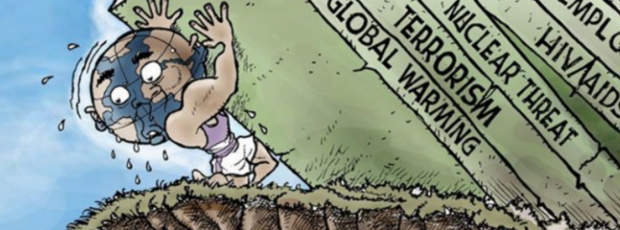

Towards glocalization
Today we are facing a historical situation where there is a big debate about how to organize our socio-geographical space, and by that, we are witnessing an important confrontation between localists, nationalists, internationalists, transnationalists and globalist ideas, and within these there are also struggles between different inner trends.
Regarding the nationalist visions, they have a basic principle related with will to return to the old nation-state centered global order, following orientations such as a strong national identity, xenophobia and economic protectionism.
From the opposite pole, we can see globalist visions, that are based on the principle of taking planet earth as a common organizational entity, and by that, they make emphasis in the unrestricted movement of people between regions, the creation of some common culture and the structuring of joint decision-making organizations at the global level.
Our presentAt the present, we are stuck in a failed pseudo-internationalist global order that been capable of solving the most important issues that we are facing as a civilization, like environmental problems, global economic crises, global warfare, inequalities between regions and countries, epidemics and many other issues that day by day are becoming worse.
In the meanwhile, we are beginning to see a strong re-emergence of nationalist movements as a reaction to the negative consequences of the previous process of neoliberal oriented globalization that had been developing since the nineties, which due to its internal contradictions such as inequality, economic crises and cultural relativism, have given rise to these ultranationalist movements that we see today.
These nationalistic movements probably will not remain strong in the long run, since they are unable to solve the various emerging problems that we face today, but in the meanwhile, they have become a serious threat to global peace and environmental sustainability.
Emergent global problemsToday we are not only facing long-standing problems such as poverty or local pollution, we are also witnessing new and very dangerous issues of different nature that will have a very negative global impact if we don't do sufficient action towards them, here we point out the following:
Climate change. Due to the massive emission of greenhouse gases that we are making for many decades, our planet is starting to overheat, which has become a serious existential threat -especially for the most vulnerable regions-. To solve anthropogenic climate change we will require doing large-scale global-collective action aimed to prevent and reduce the continuous and growing emission of these greenhouse gases.
Ecosystemic destruction. Faced with the continuous trend of resource overconsumption and the high population growth rate, the ecosystem that supports life on this planet is being destroyed by multiple processes like deforestation, resource depletion, the massive dropping of toxic residues, and many other devastating actions that are intrinsic to our present economic system and our living culture, which in combination are causing serious problems like the deadly urban pollution or the mass extinction of species. To solve this, we need to establish new environmental regulations at the global level, in contamination with massive plans of ecosystem restoration and protection.
Mass migrations. he migratory phenomena that we are seeing today it's an enormous humanitarian problem that we have, mainly caused by wars and the enormous economic asymmetries between central and peripheral countries, by which people are escaping in mass from those problematic countries, even risking their own lives. To solve this, it will be necessary to stop the conflicts situated in those places, create efficient means to transfer resources from rich countries to poor ones, and also begin to build a common global identity in order to enable the migrants to have the opportunity to live with people from all over the globe under common values.
Epidemiological situations. Nowadays, epidemics are not constrained on a local or regional place as they were in the past, differently they can quickly emerge and expand from one place to another due to the fast and dense means of transport that we have today, and because of that epidemics are almost impossible to control at the local or national level. To solve this issue we need to create supra-national effective function organizations that have the capacity to action easily in any part of the planet.
Problems related to new technologies. In recent times, we are seeing the emergence of new problems related to the application of technology and science in general, such as technological unemployment, the application of bioengineering and their ethical dilemmas, issues related to data protection and surveillance, or the application of artificial intelligence to warfare. By their nature, these problems do not respect any national boundary and will require global actions and mechanisms to mitigate their negative effects.
Economic crisis and inequality. Phenomena such as inequality, poverty or economic crises no longer affect only one country, now they have repercussions throughout the entire planet, and to solve them it will be necessary to implement resource redistribution mechanisms of different nature, multiple global regulations in certain key areas and organize collective social action on a large scale in relation to many issues that we need to address.
Weaponization of the planet. The growing weaponization of the planet is also a problem that does not respect borders, especially those related to weapons of mass destruction such as nuclear weapons or the new generation of weapons related to the application of artificial intelligence, advanced robotics or cyberwarfare. To solve this problem we need to establish a new global legal framework and promote a global pacific culture, things that only can be done with supranational government styled institutions.
Previous ways of thinking cannot solve emerging problemsNot only have these old proposals failed to efficiently solve old problems -even after a long time-, but also they are incapable of responding to the new problematic issues that will emerge in the near future, that are much more complex than the previous ones.
Firstly is more than clear that nationalist ideas do not have solutions for any of these problems, since they operate on a much smaller scale than the repercussions of these global problems, and since they cannot solve them, they underestimate or even deny those types of problems.
Secondly, internationalists and transnationalists trains of thought are not going to be able to solve these problems either, because both deny the necessity to build a collective global culture and government-styled participatory organizations that are needed to deal with these global problems.
So as none of these frameworks can solve the old-persistent problems and even less the newly emerging ones, it is necessary for us to create and develop a new framework of thinking and action which has to be based on new principles.
Towards a glocalist futureDue to the growing complexity of the present earth system, that involve social and environmental factors of very different nature, we need a new forms and principles of organizing ourselves as a civilization, that must imply the articulation of different levels of decision-making, resource distribution systems and governance structures, that jointly can deal with this type of complexity that we need to face.
For that, we should rely on glocalist ideas and organizational frameworks, that combines certain notions and processes of globalization-globalism with localization-localism; this mixture give us the possibility to create multi and trans-level organizational architectures and feedback loops that are necessarily to respond to the big issues that we have as a civilization.
Glocalism, equality, participation and substantiality, jointly should be aimed at creating a global common culture with their respective organizational and institutional systems oriented to solve the very difficult problems that we face as a species.
What does the future hold for us?The future is not something pre-determined, it depends on the actions we carry out, here we identify three possible different historical courses:
a. Return to a nationalistic-isolationistic type of global order, which will cause a rapid collapse due to imminent global problems that we are facing
b. Remain in this pseudo-internationalist type of global order that now it's very clear that cannot address effectively the global problems that we face, such as environmental collapse, inequalities between regions, growing warfare or epidemic situations.
c. Move forward towards a new form of socio-geographical integration based on the principles of glocalism.